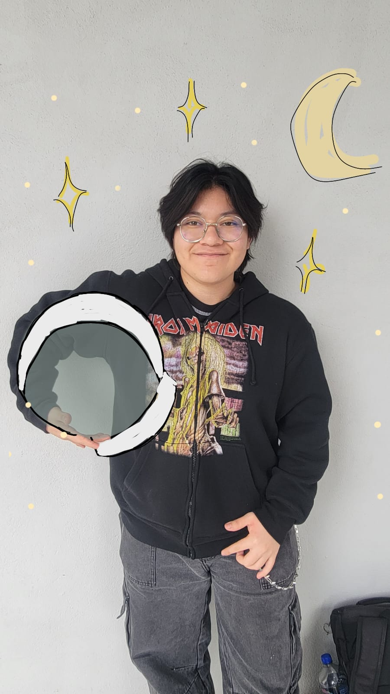
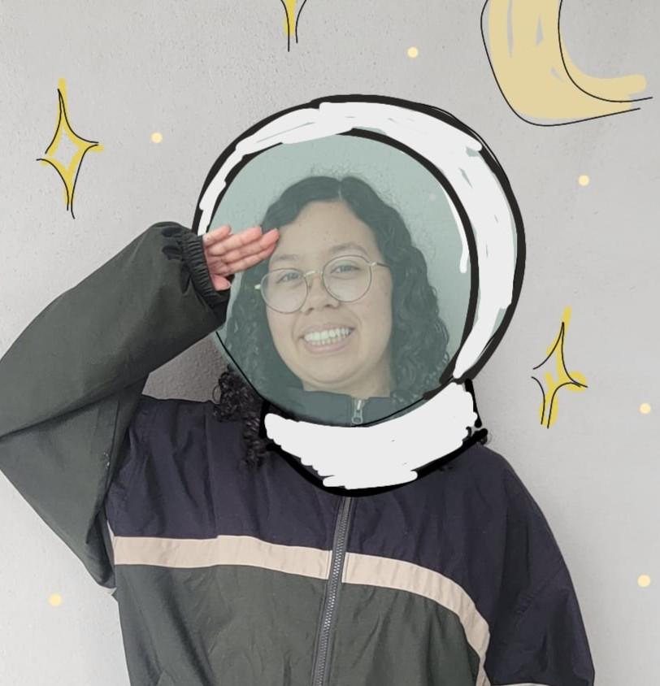
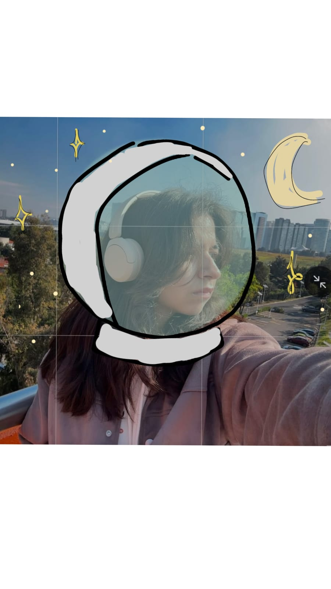

Antonio Barraza
“Navegamos las estrellas con disciplina y propósito.”
Comanda las operaciones de la AstroSS, coordinando rutas, protocolos y seguridad interplanetaria.
AstroPort 2.0 · Nueva actualización
En AstroSS, nuestra misión es ser la estación espacial más accesible y eficiente del universo, permitiendo a tripulaciones de diferentes naciones llegar a sus respectivos destinos con suministros y equipo completos. Ponemos la cordialidad y el servicio ante todo, asegurando la entrega rápida y con excelencia, a la vez protegiendo la estación de cualquier amenaza que se pueda presentar.
Somos la estación espacial mejor calificada en todo el cosmos, nuestro objetivo es mantener y mejorar nuestra reputación.
Nos comprometemos a siempre entregar todos pedidos con rapidez y calidad. Aseguramos la atención personalizada a cada tripulación, guardando sus preferencias y necesidades para futuras visitas.
Ofrecemos una amplia gama de amenidades y servicios para garantizar la comodidad y satisfacción de nuestros visitantes.
La estación creció: nuevas herramientas, nuevas amenazas y nuevas formas de ganar.
Cada día bien calificado te paga en lunas. Gástalas en la tienda: botiquines, bombas, semillas y mejoras.
Lleva varias cajas a la vez. Mejóralo para pasar de 2 a 4 y hasta 8 cajas por viaje.
La estación tiene salud propia. Si la integridad llega a cero, se pierde; sin energía, el almacén deja de funcionar.
Paredes y paneles se rompen durante los ataques. Repáralos con tu martillo; la mejora lo hace más rápido.
Cuando aterriza la nave alien, una horda de aliens se lanza contra las paredes de la estación.
Un enemigo con inteligencia propia que te persigue por la estación y ataca cuerpo a cuerpo.
Dos formas de atacar: dispara con precisión o lanza bombas en arco que dañan a todos los enemigos cercanos.
Sabotea los paneles de energía y huye si lo descubres. Atrápalo o destruye su nave para ganar lunas extra.
Planta semillas, espera a que crezcan y cosecha verduras que recuperan tu vida.
Una mejora que te avisa en cuanto un pirata llega a la estación.
Paredes, paneles y naves se rompen en pedazos con física en tiempo real.
Tu progreso se guarda al inicio de cada día. Continúa justo donde te quedaste.
Sobrevive tres días en AstroSS cumpliendo estos objetivos.
Termina cada día con un promedio mayor a 2.5 estrellas.
No dejes que la integridad de la estación llegue a cero.
Derrota a los aliens y cuida tu vida con botiquines y verduras.
Atrapa al pirata o destruye su nave para ganar lunas extra.
Apoya a las naves extranjeras a llegar a sus respectivos destinos.
Astronautas de diferentes naciones llegarán a la AstroSS por suministros.
Deberás recolectar y entregar los suministros a los astronautas, dependiendo de sus necesidades.
El cliente siempre tiene la razón, asegurate de entregar rápido y con excelencia.
Al ser una estación popular y llena de suministros, aliens y piratas querrán atacar la estación. Protégela y repara los daños.
Conoce AstroSS y su proceso de construcción
Quienes mantienen la estación estable, segura y en constante evolución.

“Navegamos las estrellas con disciplina y propósito.”
Comanda las operaciones de la AstroSS, coordinando rutas, protocolos y seguridad interplanetaria.

“Cada módulo respira gracias a la precisión.”
Encargada del diseño general de la estación, asegurando funcionalidad y estética en cada componente.

“Los datos cuentan la historia antes de que suceda.”
Especialista en análisis de datos y optimización de procesos, garantizando la eficiencia operativa.
Revisa actualizaciones, noticias y más.